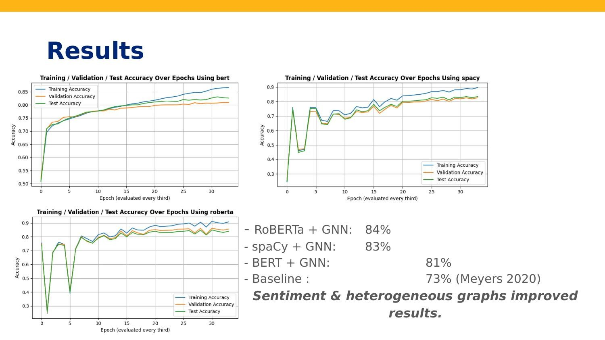

Pablo Aganza
Graduate student in Data Science at UC Berkeley (MIDS) with experience building clinical data pipelines and ML systems. I work across data engineering, machine learning, model serving, and production software.
Open to full-time roles in data engineering, data science, and ML engineering.
Projects

Wildfire Risk Ranking from Satellite Data
Near-real-time escalation scoring for emerging fire events using NASA FIRMS VIIRS detections, spatiotemporal clustering (ST-DBSCAN), and a supervised ML model trained on ICS-209 incident records.
Read more →
Imminent Seizure Prediction
A seizure prediction system using EEG signal processing, patient-specific modeling, and unsupervised autoencoders to flag preictal patterns about 60 seconds before onset.
Read more →
Detecting Misinformation using NER, Knowledge Graphs, and GNNs
A fake news detection pipeline that models articles, entities, source domains, sentiment, and fact-checking sources as a knowledge graph, then trains heterogeneous GNNs to classify misinformation - reaching 84% test accuracy across 600 model trainings.
Read more →
Predicting Flight Departure Delays
Regression pipeline across 31.7M flight records and 630M weather observations, processed on Apache Spark and Databricks, evaluating five model families including GNN and XGBoost.
Read more →Work
Foresight Diagnostics - Data Engineer
- Reduced scientific team dataset preparation and validation time from 7 days to under 1 hour by leading development of a scalable clinical data pipeline for FDA submission workflows.
- Accelerated new clinical data source integration from 2-3 days of custom engineering work to under 2 hours of configuration by building reusable validation modules across varied file formats.
- Cut data issue investigation from 3-5 days to under 4 hours by surfacing data quality issues through structured logging, validation reports, and audit records.
- Saved 20+ software engineering hours per week by building self-service export tooling for FDA submissions used by Assay Development teams.
- Technical case study: Clinical Data Pipeline for FDA Submission →
Foresight Diagnostics - Data Engineering Intern
- Built Python tools and SQL scripts to clean and transform research datasets from varied file formats for downstream analysis.
Genalyte - Machine Learning Engineer Intern
- Automated blood diagnostic robot state classification by deploying a transfer-learning computer vision model to support R&D testing workflows and quality-control checks.
Education
University of California, Berkeley - M.S. Data Science
Graduate program focused on data science, machine learning, data engineering, NLP, model serving and distributed systems.
- Capstone: Imminent Seizure Prediction using EEG signal processing, patient-specific modeling, and unsupervised autoencoders.
- ML systems: Deployed a DistilBERT sentiment analysis API using FastAPI, Redis, Docker, Kubernetes, AWS EKS, Istio, and HPA autoscaling.
- NLP: Built a misinformation detection pipeline using NER, knowledge graphs, and GNNs over the FakeNewsNet corpus.
- Machine learning at scale: Built Spark ML pipelines over large flight and weather datasets.
Carnegie Mellon University - B.S. Mathematical Sciences
Minor in Computer Science, with a concentration in Robotics.
Skills
- Languages
- Python, SQL, R, Bash
- Data Science
- Pandas, NumPy, Matplotlib, Seaborn
- Machine Learning
- PyTorch, TensorFlow/Keras, scikit-learn, XGBoost, Hugging Face Transformers
- ML Tooling / MLOps
- Optuna, FastAPI, Pydantic
- Platforms & DevOps
- GCP, AWS, Docker, Kubernetes, Git, GitHub Actions, CI/CD
- Data Platforms
- PostgreSQL, BigQuery, Neo4j, Redis
- Big Data / Distributed
- Apache Spark, PySpark, Spark SQL, MLlib, Databricks, Hadoop, MapReduce, MrJob